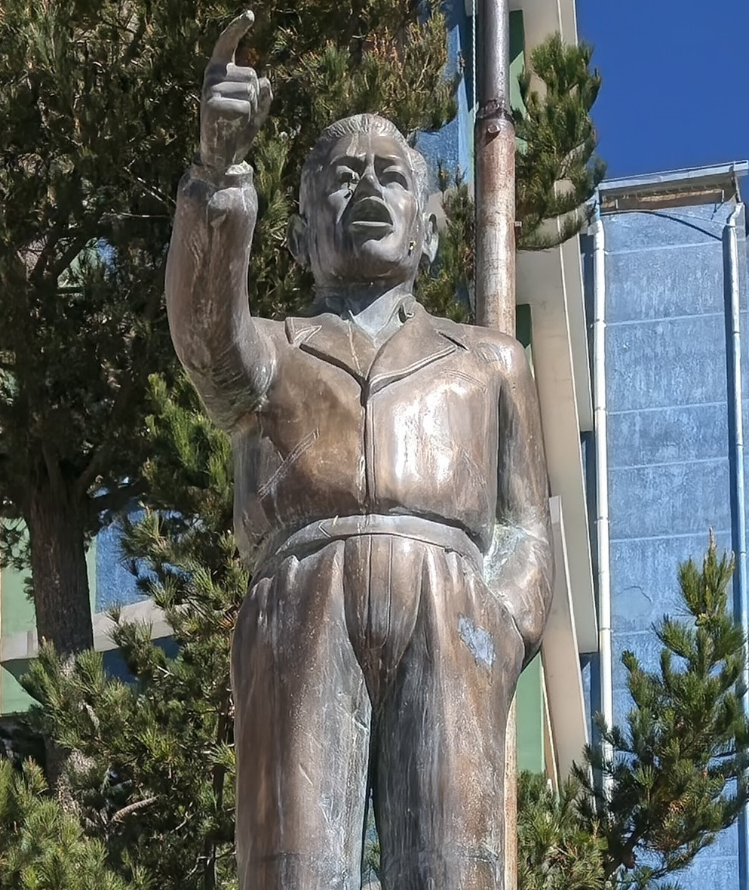

Potosí - Llallagua - Siglo XX
Monumento a Federico Escobar

📸 Imagen 1 (Monumento 3D): Elaboración propia / Registro 3D local. Fuente biográfica: Claure C., Javier. "Federico Escóbar; Un caudillo del sindicalismo boliviano". Historias de Bolivia.
🎙️ Relato histórico y música ambiental:
🎵 Relato automatizado basado en el artículo de Javier Claure C. y testimonios de Víctor Reinaga.